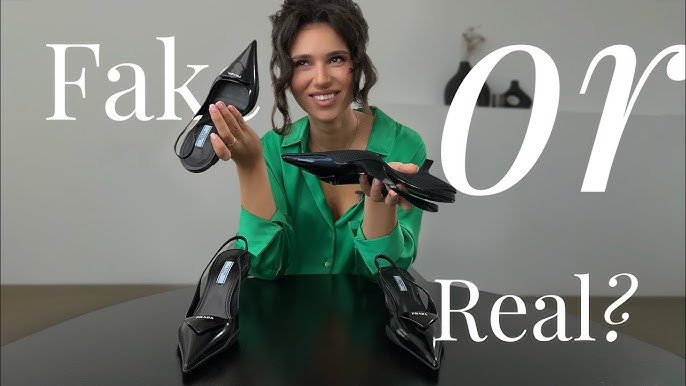
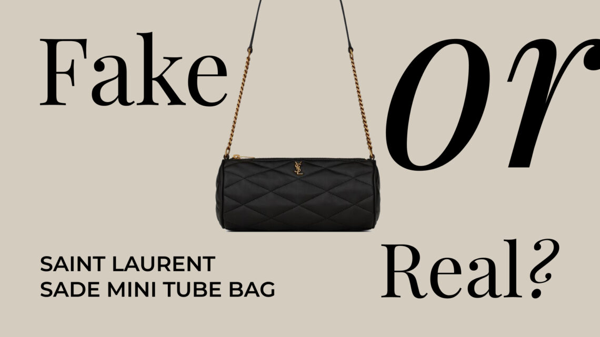
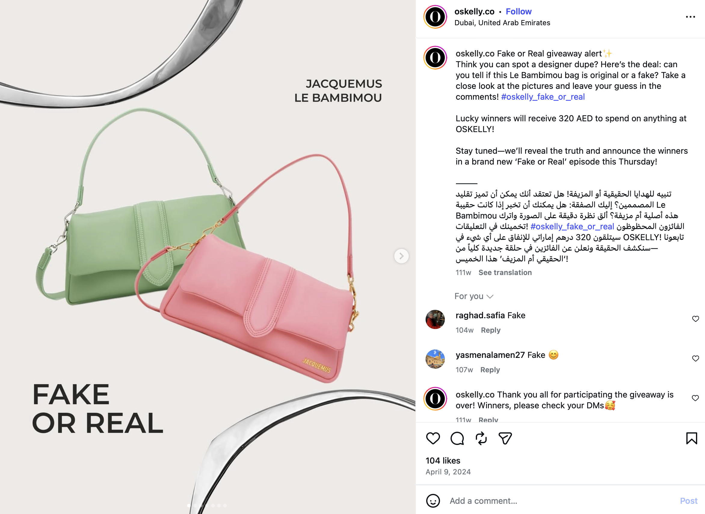
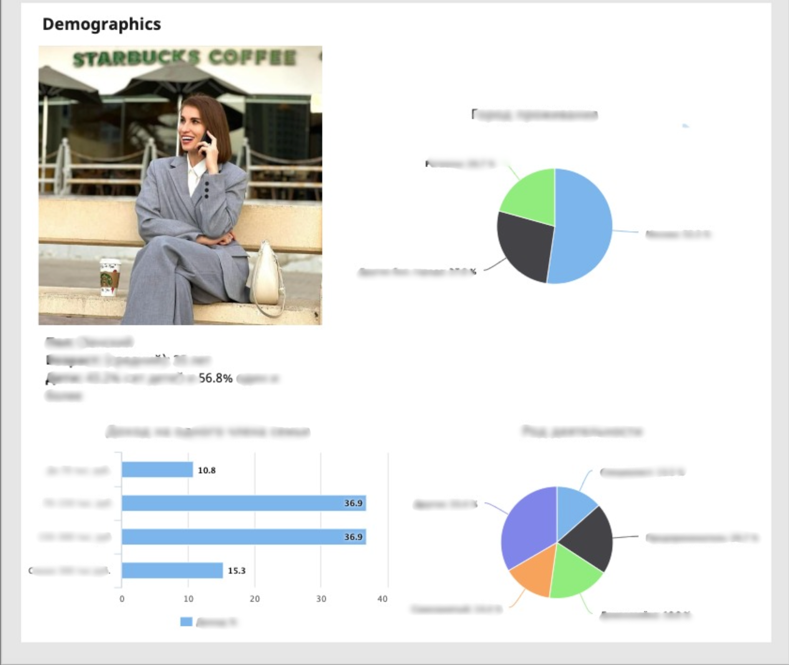

Case study
Consumer insight · Campaign strategy

01 — Overview
500k+
Platform users surveyed
3
Influencer campaigns supported
2
Analytical reports produced
3
User personas delivered
The brief
Oskelly is a luxury fashion resale platform operating across the UAE and CIS markets. The brand had a large and growing user base but lacked the consumer insight needed to sharpen its messaging and make its campaigns more targeted. My role was to run the research that would feed directly into brand strategy and campaign execution.
02 — Approach
01
Consumer research
Designed and launched 3 targeted surveys over 2 months to understand resale motivations, purchase drivers, and platform behaviour across Oskelly's 500k user base.
02
Insight and analysis
Synthesised findings into 2 analytical reports and 3 detailed user personas — mapping who the Oskelly buyer actually was, what motivated them, and what content would resonate.
03
Campaign input
Translated research into messaging direction and content calendars that fed into 3 localised influencer campaigns, contributing to measurable engagement uplift across markets.
03 — Execution



Fake or Real campaign — content developed to drive engagement and test audience knowledge of luxury authentication
Measurable Instagram engagement growth across 3 localised influencer campaigns
3 user personas delivered to the marketing team to inform segmentation and targeting
2 analytical reports used to shape brand messaging and content direction across markets
Research framework reused across subsequent campaigns as a repeatable insight process
04 — Key takeaway
The most valuable contribution wasn't the campaigns themselves — it was building the understanding that made them sharper. Research doesn't slow execution down. Done right, it speeds it up and makes every decision easier to defend.